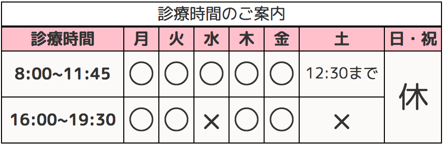

月、火、木、金：8:00〜11:45/15:30〜19:30
水：8:00〜11:45 土：8:00〜12:30
定休日：日・祝
交通事故のなかで最も多いと言われている後遺症の一つとしてあげられる
むち打ち症（頸椎捻挫）ですが、受傷直後はあまり症状ができ
ないことが多いので、
病院でレントゲンをとっても異常なしと言われるのがほとんどです。
スポーツ外傷、障害はスポーツによって起こる運動器のケガや故障の事です。外傷はアクシデントによるたった1回の急激で大きな力が加わった事で発生する運動器の損傷でいわゆるケガにあたるものです。
患部の痛みが強い状態では、症状にあわせ電気治療を患部・周辺組織・ツボに当てます。捻挫では関節の歪みを整えた上で、テーピング・包帯にて固定を行います。骨折・脱臼では骨のズレを元に戻し、固定を行い、
★越谷駅西口徒歩７分
★バス停 タローズバス県民福祉村行き
ご予約・問い合わせはこちら
048-963-0705
| 診療時間 | 月 | 火 | 水 | 木 | 金 | 土 | 日・祝 |
|---|---|---|---|---|---|---|---|
| 8:00~11:45 | ○ | ○ | ○ | ○ | ○ | 12:30まで |
休 |
| 16:00~19:30 | ○ | ○ | × | ○ | ○ | × |